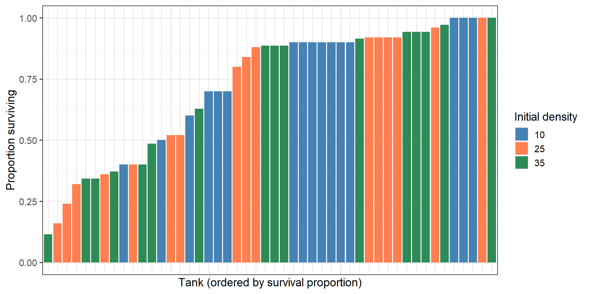
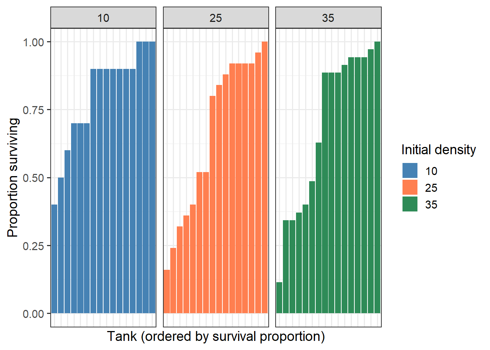
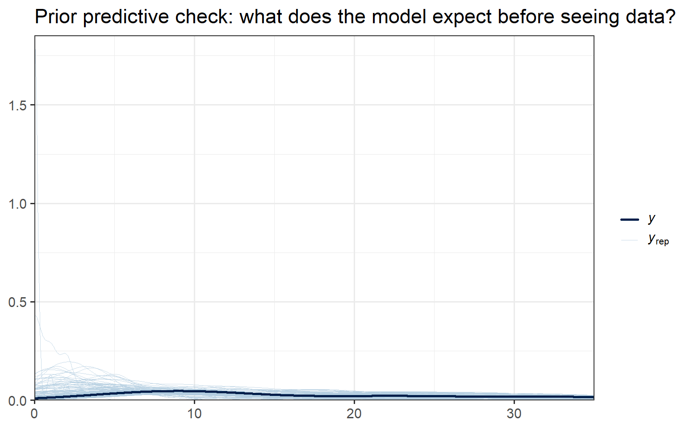
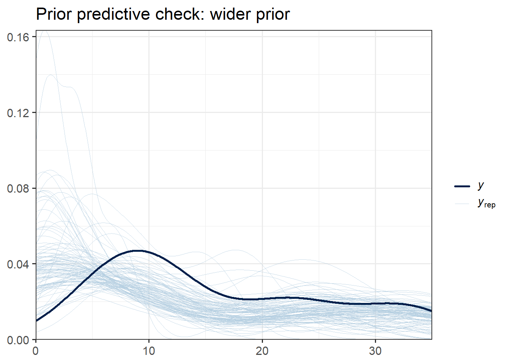
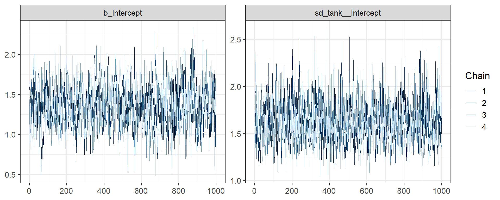
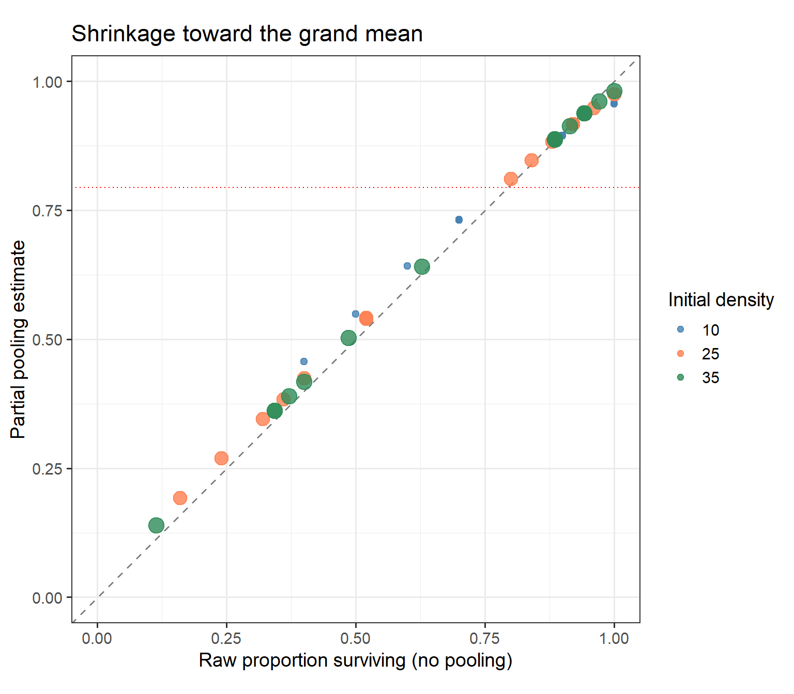
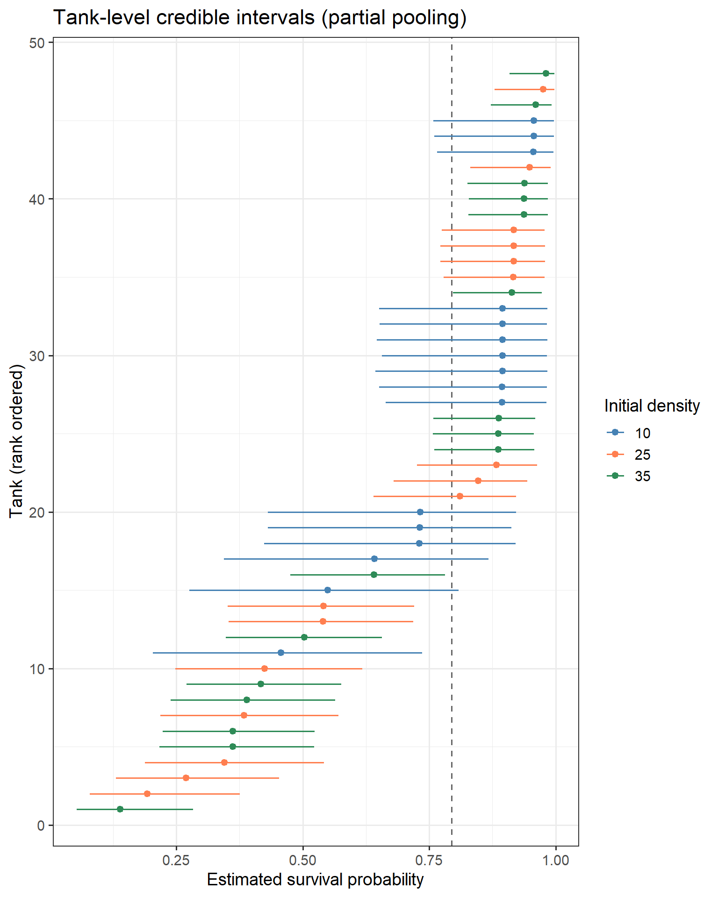
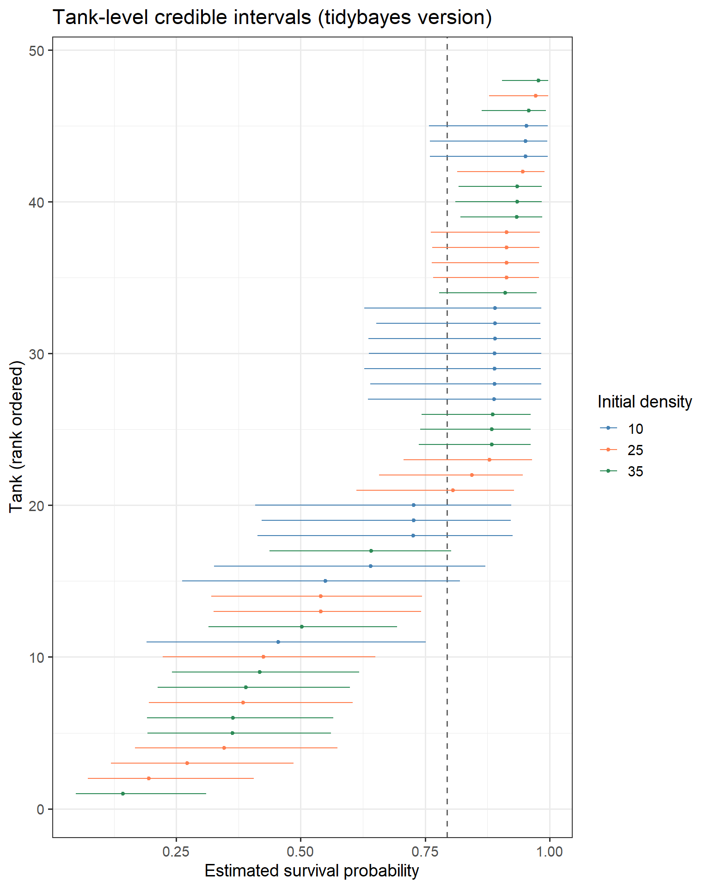
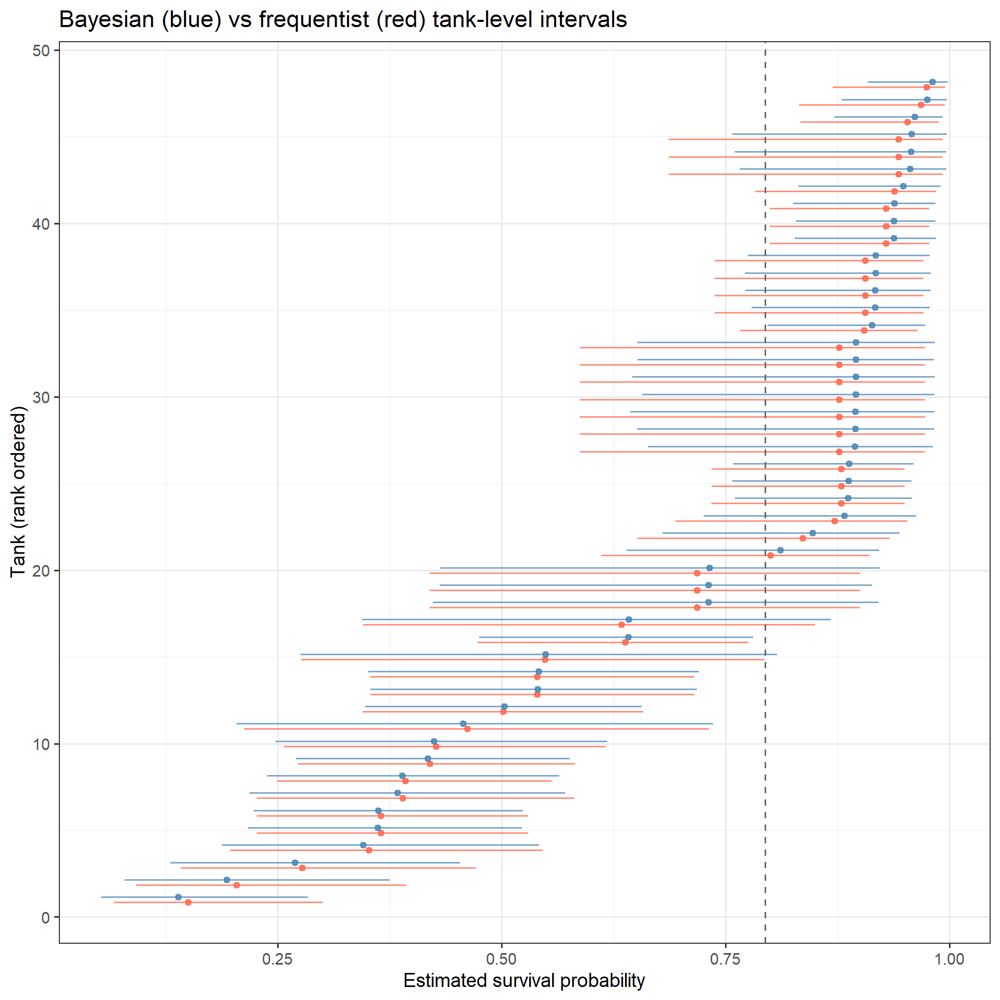
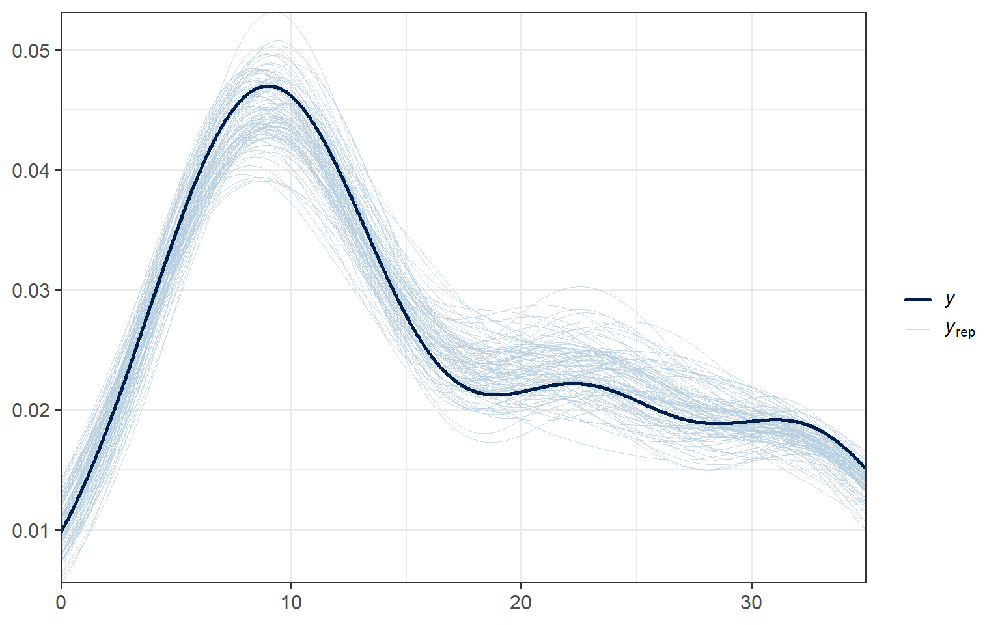

library(tidyverse)
library(brms)
library(tidybayes)
library(bayesplot)
library(ggdist)
library(lme4)
NoteBuilding on what you know
This lab brings together two threads from the course: Bayesian inference with brms (Labs 2–3) and multilevel models with lme4 (MLM lectures). You’ll fit hierarchical Bayesian models and see partial pooling, shrinkage, and group-level credible intervals in action.
ImportantHow to work through this lab
- Read and run each code chunk, making sure you understand what it does before moving on.
- Some questions have a hidden answer you can reveal after writing your own response. These cover concepts that later questions build on, so check your understanding before continuing.
- Other questions are open: no answer is provided.
- Write your responses in the code chunks marked
# Enter your answer here(use R comments for text answers). For coding exercises, write your code in chunks marked# Enter your code here. - The final section is a transfer exercise where you apply what you’ve learned to a new dataset with less scaffolding.
Part 1: The reedfrogs data
Setup
The data
We’ll use data from a predation experiment on African reed frog tadpoles (Hyperolius spinigularis), originally from Vonesh & Bolker (2005). This dataset is one of the canonical examples in McElreath’s Statistical Rethinking for introducing hierarchical models. But unlike the book’s implementation, we will be using brms() and tidyverse.
Here is the setup of the experiment: Tadpoles were placed in 48 experimental tanks. The researchers varied three things across the tanks — the initial number of tadpoles per tank (the density: 10, 25, or 35), whether a predator was present, and the tadpole body size. After the experiment, they counted how many survived.
# Load the data
d <- read.csv("https://raw.githubusercontent.com/rmcelreath/rethinking/master/data/reedfrogs.csv", sep = ";") %>%
mutate(
tank = factor(1:n()),
density = as.integer(density),
surv = as.integer(surv)
)
glimpse(d)Rows: 48
Columns: 6
$ density <int> 10, 10, 10, 10, 10, 10, 10, 10, 10, 10, 10, 10, 10, 10, 10, 1…
$ pred <chr> "no", "no", "no", "no", "no", "no", "no", "no", "pred", "pred…
$ size <chr> "big", "big", "big", "big", "small", "small", "small", "small…
$ surv <int> 9, 10, 7, 10, 9, 9, 10, 9, 4, 9, 7, 6, 7, 5, 9, 9, 24, 23, 22…
$ propsurv <dbl> 0.90, 1.00, 0.70, 1.00, 0.90, 0.90, 1.00, 0.90, 0.40, 0.90, 0…
$ tank <fct> 1, 2, 3, 4, 5, 6, 7, 8, 9, 10, 11, 12, 13, 14, 15, 16, 17, 18…Key variables:
surv— number of tadpoles that survived (our outcome)density— initial number of tadpoles in the tank (10, 25, or 35)propsurv— proportion surviving (surv / density)pred— predator presence (noorpred)size— tadpole body size (bigorsmall)tank— tank ID (1 through 48), our grouping variable
Let’s see what survival looks like across tanks:
Code
ggplot(d, aes(x = reorder(tank, propsurv), y = propsurv, fill = factor(density))) +
geom_col() +
scale_fill_manual(values = c("10" = "steelblue", "25" = "coral", "35" = "seagreen"),
name = "Initial density") +
labs(x = "Tank (ordered by survival proportion)",
y = "Proportion surviving") +
theme_bw(base_size = 14) +
theme(axis.text.x = element_blank(), axis.ticks.x = element_blank())
There is substantial variation across tanks. Some tanks had 100% survival, others lost most of their tadpoles.
Question 1.1
Recreate the bar chart above, but facet it by density (using facet_wrap(~ density, scales = "free_x")). How does the spread of survival proportions compare across the three density levels? Which group shows the most variation?
Code
# Enter your code here
ggplot(d, aes(x = reorder(tank, propsurv), y = propsurv, fill = factor(density))) +
facet_wrap(~ density, scales = "free_x") +
geom_col() +
scale_fill_manual(values = c("10" = "steelblue", "25" = "coral", "35" = "seagreen"),
name = "Initial density") +
labs(x = "Tank (ordered by survival proportion)",
y = "Proportion surviving") +
theme_bw(base_size = 14) +
theme(axis.text.x = element_blank(), axis.ticks.x = element_blank())
Code
# The highest density group ('35') shows the most variation. --> not a common case!
TipAnswer
The density = 10 facet shows the widest spread in survival proportions, ranging from near 0 to 1.0. The density = 35 facet is more tightly clustered. With fewer tadpoles, any single outcome has a larger effect on the proportion, so small tanks produce noisier estimates. When we fit the partial pooling model later, these are the tanks that will be pulled most toward the grand mean.
Question 1.2
Why would smaller tanks produce more extreme estimates?
Code
# Enter your answer here
# When sample size is small within groups, individual noise can affect the overall outcome more easily.
TipAnswer
Smaller samples produce more variable estimates. With only 10 tadpoles, a single death moves the proportion by 0.10. With 35 tadpoles, a single death moves it by only ~0.03. The small-sample tanks have more sampling noise, so their raw proportions are less reliable estimates of the true survival rate. Partial pooling will pull these extreme estimates toward the grand mean more than the large-sample tanks.
Part 2: From glm() to brm() — Bayesian logistic regression
A quick bridge
You already know how to fit logistic regression with glm():
glm_fit <- glm(cbind(surv, density - surv) ~ 1,
family = binomial, data = d)
coef(glm_fit)(Intercept)
0.8430498 The intercept is on the log-odds scale.
Note
glm() vs brms syntax for binomial models
In glm(), you specify a binomial outcome with cbind(successes, failures). In brms, the syntax is successes | trials(total) — you give the outcome and the number of trials instead. The | here is not a conditioning bar; it’s how brms attaches extra information to the response (the same slot handles censoring, weights, and other annotations in more advanced models).
For now, just read surv | trials(density) as: “the outcome is surv, out of density trials.”
fit_complete <- brm(
surv | trials(density) ~ 1,
family = binomial,
data = d,
file = "fits/lab4_fit_complete"
)Code
fixef(fit_complete) Estimate Est.Error Q2.5 Q97.5
Intercept 0.8419555 0.06423326 0.7184601 0.9663369The intercept is in log-odds. To convert to a probability, use brms::inv_logit_scaled():
Code
inv_logit_scaled(fixef(fit_complete)[, "Estimate"])[1] 0.6988769Question 2.1
Compare the glm() coefficient to the brm() posterior mean. Are they similar? Why would you expect them to be?
Code
# Enter your answer here
# glm -> 0.8430498
# brm -> 0.8419555
# They're very similar as they should be. The brm() here didn't use any strong priors so it's basically doing a very similar thing with glm().
TipAnswer
They should be very similar. With 48 tanks and hundreds of total observations, the data dominate the (default, weakly informative) prior. The Bayesian posterior mean converges toward the MLE when the data are plentiful and the prior is weak. The key difference is that brm() gives you a full posterior distribution, not just a point estimate.
Prior predictive check
Before fitting the hierarchical model and looking at results, it’s good practice to ask: do our priors make sense? We can answer this by fitting the model with sample_prior = "only", which ignores the data entirely and generates predictions based solely on the priors.
We’ll use the priors we plan to use for the partial pooling model: normal(0, 1.5) on the intercept and exponential(1) on the group-level SD.
Code
fit_prior_only <- brm(
surv | trials(density) ~ 1 + (1 | tank),
family = binomial,
prior = c(
prior(normal(0, 1.5), class = Intercept),
prior(exponential(1), class = sd)
),
data = d,
sample_prior = "only",
file = "fits/lab4_fit_prior_only"
)Code
pp_check(fit_prior_only, ndraws = 100) +
theme_bw(base_size = 14) +
labs(title = "Prior predictive check: what does the model expect before seeing data?")
Question 2.2
Look at the prior predictive distributions. Do the simulated survival counts span a reasonable range?
Now try it yourself with a much wider prior on the group-level SD. Refit the prior-only model using prior(normal(0, 10), class = sd) instead of exponential(1), run pp_check() on it, and compare the two. What changes?
Code
# Enter your code here — refit with the wider prior and run pp_check()
fit_prior_only_wider <- brm(
surv | trials(density) ~ 1 + (1 | tank),
family = binomial,
prior = c(
prior(normal(0, 1.5), class = Intercept),
prior(normal(0, 10), class = sd)
),
data = d,
sample_prior = "only",
file = "fits/lab4_fit_prior_only_wider"
)
pp_check(fit_prior_only_wider, ndraws = 100) +
theme_bw(base_size = 14) +
labs(title = "Prior predictive check: wider prior")
Code
# With prior of normal(1,10), the predicted data shows much more variation. Also the predictions are not very accurate overall, while exponential(1)'s prediction nicely captured the actual distribution.
TipAnswer
With exponential(1) on the group-level SD, the prior predictive distribution covers a wide but sensible range of survival counts — the priors allow tanks to differ without implying anything absurd. With normal(0, 10) on the SD, the group-level standard deviation can be enormous, implying that some tanks have survival rates near 0% and others near 100% as entirely separate modes. The prior predictive distribution looks bimodal and extreme. The exponential(1) prior gently regularizes \(\sigma_{\text{tank}}\), keeping it in a reasonable range.
Part 3: Three models
Complete pooling
We already fit the complete pooling model above: one grand intercept, ignoring tanks entirely. Every tank is assumed to have the same underlying survival probability.
Code
summary(fit_complete) Family: binomial
Links: mu = logit
Formula: surv | trials(density) ~ 1
Data: d (Number of observations: 48)
Draws: 4 chains, each with iter = 2000; warmup = 1000; thin = 1;
total post-warmup draws = 4000
Regression Coefficients:
Estimate Est.Error l-95% CI u-95% CI Rhat Bulk_ESS Tail_ESS
Intercept 0.84 0.06 0.72 0.97 1.00 1223 2037
Draws were sampled using sampling(NUTS). For each parameter, Bulk_ESS
and Tail_ESS are effective sample size measures, and Rhat is the potential
scale reduction factor on split chains (at convergence, Rhat = 1).Question 3.1
What assumption does this model make about differences between tanks?
Code
# Enter your answer here
# This model ignores tank variability, so it assumes the same # of survival from all tanks in the same density group.
TipAnswer
Complete pooling assumes all tanks share exactly the same survival probability. Any observed differences between tanks are treated as pure sampling noise. The model has no mechanism for representing real variation between tanks.
No pooling
Each tank gets its own intercept, estimated entirely from its own data:
Code
fit_no_pool <- brm(
surv | trials(density) ~ 0 + tank,
family = binomial,
data = d,
file = "fits/lab4_fit_no_pool"
)Extract the per-tank estimates and convert to probabilities:
Code
no_pool_estimates <- fixef(fit_no_pool) %>%
data.frame() %>%
rownames_to_column("tank") %>%
mutate(
tank = str_remove(tank, "tank"),
prob = inv_logit_scaled(Estimate),
prob_lower = inv_logit_scaled(Q2.5),
prob_upper = inv_logit_scaled(Q97.5)
)
head(no_pool_estimates) tank Estimate Est.Error Q2.5 Q97.5 prob prob_lower
1 1 2.676057 1.1677458 0.6677734 5.218383 0.9355989 0.6610044
2 2 401.533618 215.5720906 28.5361284 728.533413 1.0000000 1.0000000
3 3 1.027176 0.8278153 -0.5299001 2.684454 0.7363681 0.3705402
4 4 379.084912 217.4738403 18.3005036 725.412145 1.0000000 1.0000000
5 5 2.705926 1.3499730 0.6814012 6.127149 0.9373754 0.6640514
6 6 2.695789 1.2549452 0.7716171 5.700529 0.9367777 0.6838706
prob_upper
1 0.9946131
2 1.0000000
3 0.9361031
4 1.0000000
5 0.9978220
6 0.9966670Question 3.2
Look at the credible intervals for a few tanks. Compare a tank that started with 10 tadpoles to one that started with 35. Which has a wider interval? Why?
Code
# Enter your code here — pick one tank with density 10 and one with density 35
# and compare their intervals
head(d) # tank no.3 with 10 tadpoles density pred size surv propsurv tank
1 10 no big 9 0.9 1
2 10 no big 10 1.0 2
3 10 no big 7 0.7 3
4 10 no big 10 1.0 4
5 10 no small 9 0.9 5
6 10 no small 9 0.9 6Code
tail(d) # tank no.45 with 35 tadpoles density pred size surv propsurv tank
43 35 pred big 13 0.3714286 43
44 35 pred big 14 0.4000000 44
45 35 pred small 22 0.6285714 45
46 35 pred small 12 0.3428571 46
47 35 pred small 31 0.8857143 47
48 35 pred small 17 0.4857143 48Code
no_pool_estimates[3,] tank Estimate Est.Error Q2.5 Q97.5 prob prob_lower prob_upper
3 3 1.027176 0.8278153 -0.5299001 2.684454 0.7363681 0.3705402 0.9361031Code
# (-0.5299001, 2.684454)
no_pool_estimates[45,] tank Estimate Est.Error Q2.5 Q97.5 prob prob_lower prob_upper
45 45 0.4661693 0.3706761 -0.2668085 1.163873 0.6144767 0.4336908 0.7620357Code
# (-0.2668085, 1.163873)
# The one with 10 tadpoles has a wider credible interval. It has smaller sample size so error can vary in the outcome.
TipAnswer
Tanks with density = 10 have wider credible intervals because they have fewer observations. With only 10 data points, there is more uncertainty about the true survival probability. Tanks with density = 35 have tighter intervals because more data constrain the estimate.
Partial pooling
The hierarchical model lets each tank have its own intercept, but those intercepts come from a shared population distribution. The model learns how spread out the tank-level intercepts are (via the group-level SD, \(\sigma_{\text{tank}}\)).
Code
fit_partial <- brm(
surv | trials(density) ~ 1 + (1 | tank),
family = binomial,
prior = c(
prior(normal(0, 1.5), class = Intercept),
prior(exponential(1), class = sd)
),
data = d,
file = "fits/lab4_fit_partial"
)Code
summary(fit_partial) Family: binomial
Links: mu = logit
Formula: surv | trials(density) ~ 1 + (1 | tank)
Data: d (Number of observations: 48)
Draws: 4 chains, each with iter = 2000; warmup = 1000; thin = 1;
total post-warmup draws = 4000
Multilevel Hyperparameters:
~tank (Number of levels: 48)
Estimate Est.Error l-95% CI u-95% CI Rhat Bulk_ESS Tail_ESS
sd(Intercept) 1.63 0.21 1.26 2.11 1.00 1157 2135
Regression Coefficients:
Estimate Est.Error l-95% CI u-95% CI Rhat Bulk_ESS Tail_ESS
Intercept 1.35 0.26 0.86 1.87 1.00 934 1160
Draws were sampled using sampling(NUTS). For each parameter, Bulk_ESS
and Tail_ESS are effective sample size measures, and Rhat is the potential
scale reduction factor on split chains (at convergence, Rhat = 1).The sd(Intercept) row under “Group-Level Effects” is the estimated population standard deviation of tank-level intercepts (on the log-odds scale). It controls how much pooling happens.
Question 3.3
What does the sd(Intercept) parameter represent in this model? What would happen to the tank-level estimates if it were very close to 0? What if it were very large?
Code
# Enter your answer here
# It shows the standard deviation of density group distribution. If it were almost 0, tank difference would be very small so the outcome won't depend much on tank variability. If it were very large, it would mean that different tanks have very different outcomes.
TipAnswer
sd(Intercept) is the standard deviation of the population distribution from which tank-level intercepts are drawn. If it were close to 0, all tanks would be forced to have nearly the same intercept, recovering complete pooling. If it were very large, each tank’s estimate would be barely influenced by the others, recovering no pooling. The model estimates this parameter from the data, guided by the exponential(1) prior, so the amount of pooling is learned, not hand-picked.
Quick diagnostics check
Now that the partial pooling model is fit, check that the sampler ran well:
Code
mcmc_trace(fit_partial, pars = c("b_Intercept", "sd_tank__Intercept")) +
theme_bw(base_size = 14)
Good trace plots look like “fat, hairy caterpillars” — the chains overlap and wander freely through the same region. But trace plots are a visual check. The summary() output also reports three numerical diagnostics:
NoteRhat (\(\hat{R}\))
\(\hat{R}\) compares the variance between chains to the variance within each chain. If all chains have converged to the same posterior, \(\hat{R} \approx 1.0\). Values above 1.01 indicate the chains haven’t converged and the estimates should not be trusted.
NoteBulk ESS and Tail ESS
MCMC draws are autocorrelated, so 4,000 draws carry less information than 4,000 independent samples. Effective sample size (ESS) estimates how many independent draws your correlated samples are worth. Bulk ESS measures this for the center of the posterior (reliable means and medians). Tail ESS measures it for the tails (reliable credible interval endpoints). Both should be above 400.
Question 3.4
Look at the trace plots and the summary() output from fit_partial. Are the Rhat values all below 1.01? Are Bulk_ESS and Tail_ESS above 400 for every parameter? Do the trace plots show good mixing?
Code
# Enter your answer here
# In the summary() output, both Rhats are 1.00 so the chains converged. All ESS values are over 400. The trace plot also looks good (furry fat caterpillar).
TipAnswer
For a well-behaved model like this one, Rhat should be very close to 1.00 for all parameters, and both Bulk_ESS and Tail_ESS should be well above 400. The trace plots should show all four chains wandering through the same region with no visible separation. If any of these checks fail, it would indicate a sampling problem, and you’d want to investigate before trusting the estimates.
Part 4: Shrinkage
Partial pooling produces shrinkage: estimates pulled toward the grand mean. Tanks with few observations or extreme raw values get pulled more. Let’s see this.
Building a shrinkage plot
First, get the raw (empirical) survival proportions and the partial-pooling estimates side by side:
Code
# Raw proportions (empirical, no-pooling)
tank_raw <- d %>%
select(tank, density, propsurv) %>%
rename(raw_prop = propsurv)
# Partial pooling estimates from the hierarchical model
tank_partial <- coef(fit_partial)$tank[, , "Intercept"] %>%
data.frame() %>%
rownames_to_column("tank") %>%
mutate(partial_prop = inv_logit_scaled(Estimate))
# Combine
shrinkage_df <- left_join(tank_raw, tank_partial, by = "tank")
head(shrinkage_df) tank density raw_prop Estimate Est.Error Q2.5 Q97.5 partial_prop
1 1 10 0.9 2.1464761 0.8678883 0.6252905 4.092387 0.8953390
2 2 10 1.0 3.1059983 1.1288784 1.1549057 5.618143 0.9571395
3 3 10 0.7 0.9997175 0.6654898 -0.2775626 2.350775 0.7310030
4 4 10 1.0 3.0778635 1.1101531 1.1836663 5.553089 0.9559703
5 5 10 0.9 2.1422358 0.8807053 0.5920065 4.073540 0.8949410
6 6 10 0.9 2.1348874 0.8384010 0.6791086 3.972000 0.8942481Now plot:
Code
# Grand mean (on probability scale)
grand_mean <- inv_logit_scaled(fixef(fit_partial)[, "Estimate"])
ggplot(shrinkage_df, aes(x = raw_prop, y = partial_prop)) +
geom_abline(slope = 1, intercept = 0, linetype = "dashed", color = "gray50") +
geom_hline(yintercept = grand_mean, linetype = "dotted", color = "red", linewidth = 0.5) +
geom_point(aes(size = density, color = factor(density)), alpha = 0.8) +
scale_color_manual(values = c("10" = "steelblue", "25" = "coral", "35" = "seagreen"),
name = "Initial density") +
scale_size_continuous(range = c(2, 5), guide = "none") +
labs(x = "Raw proportion surviving (no pooling)",
y = "Partial pooling estimate",
title = "Shrinkage toward the grand mean") +
coord_equal(xlim = c(0, 1), ylim = c(0, 1)) +
theme_bw(base_size = 14)
Points on the dashed diagonal would mean no shrinkage at all. Points pulled toward the red dotted line (the grand mean) show shrinkage in action.
Question 4.1
Describe the pattern you see in the shrinkage plot. Which tanks moved the most? How does tank size (density) relate to the amount of shrinkage?
Code
# Enter your answer here
# I see some blue (density 10) and orange (density 25) ones moved the most toward the red line. Tanks with lower density tended to shrink more.Question 4.2
Consider a tank that started with 10 tadpoles and all 10 survived (raw proportion = 1.0). What does the partial pooling model do to this estimate? Why?
Code
# Enter your answer here
# It will be shrinked a lot. 10/10 survival in a tank is likely an outlier, as the sample size is small and it shows an extreme value. So it will be strongly pulled toward the grand mean.
TipAnswer
The partial pooling model pulls that tank’s estimate down from 1.0 toward the grand mean. A 100% survival rate from only 10 tadpoles is likely an overestimate of the true survival probability — with more tadpoles, we’d probably see some deaths. The model recognizes that this extreme value is partly real signal and partly sampling noise, and the shrinkage separates the two. Tanks with density = 10 and extreme proportions (near 0 or 1) show the most shrinkage because they have the least data and the most extreme raw estimates.
Part 5: Group-level credible intervals
Caterpillar plot
One of the advantages of Bayesian hierarchical models is that you get full posterior distributions for each group-level parameter. Let’s visualize these as a caterpillar plot.
Code
# Extract tank-level intercepts with credible intervals
tank_intervals <- coef(fit_partial)$tank[, , "Intercept"] %>%
data.frame() %>%
rownames_to_column("tank") %>%
mutate(
prob = inv_logit_scaled(Estimate),
prob_lower = inv_logit_scaled(Q2.5),
prob_upper = inv_logit_scaled(Q97.5)
) %>%
left_join(d %>% select(tank, density), by = "tank") %>%
arrange(prob) %>%
mutate(rank = row_number())
# Grand mean
gm <- inv_logit_scaled(fixef(fit_partial)[, "Estimate"])
ggplot(tank_intervals, aes(x = prob, xmin = prob_lower, xmax = prob_upper,
y = rank, color = factor(density))) +
geom_vline(xintercept = gm, linetype = "dashed", color = "gray40") +
geom_pointrange(size = 0.3) +
scale_color_manual(values = c("10" = "steelblue", "25" = "coral", "35" = "seagreen"),
name = "Initial density") +
labs(x = "Estimated survival probability",
y = "Tank (rank ordered)",
title = "Tank-level credible intervals (partial pooling)") +
theme_bw(base_size = 14)
A tidybayes alternative
The tidybayes package offers a more fluent pipeline for extracting and plotting posterior draws:
Code
fit_partial %>%
spread_draws(r_tank[tank, ]) %>%
mutate(tank_intercept = r_tank + fixef(fit_partial)[, "Estimate"],
prob = inv_logit_scaled(tank_intercept)) %>%
group_by(tank) %>%
median_qi(prob) %>%
mutate(tank = as.character(tank)) %>%
left_join(d %>% mutate(tank = as.character(tank)) %>%
select(tank, density), by = "tank") %>%
arrange(prob) %>%
mutate(rank = row_number()) %>%
ggplot(aes(x = prob, xmin = .lower, xmax = .upper,
y = rank, color = factor(density))) +
geom_vline(xintercept = gm, linetype = "dashed", color = "gray40") +
geom_pointinterval(size = 0.3) +
scale_color_manual(values = c("10" = "steelblue", "25" = "coral", "35" = "seagreen"),
name = "Initial density") +
labs(x = "Estimated survival probability",
y = "Tank (rank ordered)",
title = "Tank-level credible intervals (tidybayes version)") +
theme_bw(base_size = 14)
Question 5.1
How do these credible intervals compare to what you would get from glmer() in lme4? What is fundamentally different about the Bayesian version?
Code
# Enter your answer here
# glmer() provides an estimate point of each parameter and use the estimated parameter values to produce credible intervals. In Bayesian version, it provides estimated ditributions of parameters (e.g., mean, sd) so the credible intervals here are more interpretable.
TipAnswer
glmer() estimates the group-level standard deviation (\(\sigma_{\text{tank}}\)) as a single point value and then conditions on it to produce group-level intervals. The Bayesian model integrates over the full posterior uncertainty in \(\sigma_{\text{tank}}\), so the credible intervals for each tank reflect uncertainty in both the tank-level intercept and the variance component. When the number of groups is small or group sizes are unbalanced, this difference matters: the Bayesian intervals are typically wider and more honest about the overall uncertainty.
Comparing Bayesian and frequentist intervals
Let’s make that comparison concrete. Here is the same model fit with glmer():
Code
fit_freq <- glmer(
cbind(surv, density - surv) ~ 1 + (1 | tank),
family = binomial,
data = d
)We can extract the frequentist tank-level intercepts and their conditional standard errors, then build intervals to compare against the Bayesian credible intervals:
Code
# Frequentist estimates
freq_intercept <- fixef(fit_freq)[["(Intercept)"]]
freq_ranef <- ranef(fit_freq, condVar = TRUE)$tank
freq_se <- sqrt(attr(freq_ranef, "postVar")[1, 1, ])
freq_df <- tibble(
tank = rownames(freq_ranef),
freq_est = freq_intercept + freq_ranef[, 1],
freq_lower = freq_est - 1.96 * freq_se,
freq_upper = freq_est + 1.96 * freq_se
) %>%
mutate(across(c(freq_est, freq_lower, freq_upper), inv_logit_scaled))
# Bayesian estimates (already computed)
bayes_df <- tank_intervals %>%
mutate(tank = as.character(tank))
# Combine
compare_df <- left_join(bayes_df, freq_df, by = "tank") %>%
arrange(prob) %>%
mutate(rank = row_number())
ggplot(compare_df, aes(y = rank)) +
# Frequentist intervals (red)
geom_pointrange(aes(x = freq_est, xmin = freq_lower, xmax = freq_upper),
color = "tomato", size = 0.25, alpha = 0.7,
position = position_nudge(y = -0.15)) +
# Bayesian intervals (blue)
geom_pointrange(aes(x = prob, xmin = prob_lower, xmax = prob_upper),
color = "steelblue", size = 0.25, alpha = 0.7,
position = position_nudge(y = 0.15)) +
geom_vline(xintercept = gm, linetype = "dashed", color = "gray40") +
labs(x = "Estimated survival probability",
y = "Tank (rank ordered)",
title = "Bayesian (blue) vs frequentist (red) tank-level intervals") +
theme_bw(base_size = 14)
Question 5.2
Compare the blue (Bayesian) and red (frequentist) intervals. What differences do you notice? Which tend to be wider?
Code
# Enter your answer here
# The intervals are mostly similar but frequentist ones tend to be a little bit wider, especially for the tanks with higher survival probability.
# The answer below says that blue ones tend to be wider... But I see the opposite in the plot??
TipAnswer
The Bayesian intervals are generally slightly wider than the frequentist intervals. glmer() estimates \(\sigma_{\text{tank}}\) as a single number and treats it as known when computing the tank-level intervals. The Bayesian model carries forward uncertainty in \(\sigma_{\text{tank}}\), so its intervals reflect two sources of uncertainty at once: where each tank’s intercept falls, and how spread out tanks are in general. The difference is most visible for tanks with extreme estimates or small sample sizes.
Part 6: Model checking and comparison
Posterior predictive check
Code
pp_check(fit_partial, ndraws = 100) +
theme_bw(base_size = 14)
Question 6.1
Does the posterior predictive distribution capture the general shape of the observed data? Are there any systematic discrepancies?
Code
# Enter your answer here
# The posterior predictive distribution nicely captures the general shape of data! It slightly overestimates the highest density tanks?LOO-CV model comparison
Code
loo_complete <- loo(fit_complete)
loo_partial <- loo(fit_partial)
loo_compare(loo_complete, loo_partial) elpd_diff se_diff
fit_partial 0.0 0.0
fit_complete -180.3 33.0
NoteLOO-CV and ELPD
Leave-One-Out Cross-Validation (LOO-CV) estimates how well a model predicts held-out data. For each observation, the model is (approximately) refit without it and asked to predict it. The result is summarized as ELPD (expected log predictive density) — higher is better. loo_compare() puts the best model on top; the elpd_diff column tells you how much better it is, and se_diff tells you how certain that difference is. A difference much larger than its SE is strong evidence.
Question 6.2
Which model wins on LOO-CV? By how much (in ELPD units)? Is this surprising?
Code
# Enter your answer here
# The partial pooling model wins over complete pooling model by about 180 ELPD units. This isn't surprising! Partial pooling takes into account tank variability and thus makes better predictions.
TipAnswer
The partial pooling model should win decisively. The complete pooling model ignores all tank-level variation, so it makes poor predictions for tanks that deviate from the overall mean. The ELPD difference should be large relative to its standard error, indicating strong evidence in favor of the hierarchical model. Since we could see substantial between-tank variation in the raw data, it would be surprising if complete pooling won.
NotePareto-k diagnostics
The loo() function uses an approximation rather than actually refitting the model N times. Pareto-k values measure how reliable that approximation is for each observation. Values below 0.5 are fine; 0.5–0.7 are acceptable; above 0.7 means the approximation is unreliable for that observation. High Pareto-k values often come from influential observations — in hierarchical models, these tend to be observations in small groups or with extreme outcomes. If you see problematic values, reloo() can refit the model leaving out those specific observations for exact LOO estimates.
Question 6.3
Check the Pareto-k diagnostics from loo(). Are there any problematic observations? What would you do about them?
Code
# Enter your code here — look at loo_partial and check for warnings
loo_partial <- loo(fit_partial)
# There are 41 observations with too high Pareto-k values. Those observations might pull predictions a lot. We should refit each model with n-1 observations.
TipAnswer
If any Pareto-k values exceed 0.7, those observations are highly influential and the LOO approximation may be unreliable for them. You can use reloo(loo_partial, fit_partial) to refit the model leaving out those specific observations, giving exact LOO estimates for the problematic cases. In hierarchical models, high Pareto-k values often come from groups with very few observations or extreme outcomes.
Optional: Going further
If you finish early, try adding pred (predator presence) as a fixed effect to the reedfrogs partial pooling model. Fit the model, compare it to the intercept-only partial pooling model using loo_compare(), and interpret the result.
Code
# Enter your code and answers hereResources
- Kurz (2023). Statistical Rethinking with brms and the tidyverse, Chapter 13
- McElreath (2020). Statistical Rethinking, Chapters 12–13
- Gelman & Hill (2007). Data Analysis Using Regression and Multilevel/Hierarchical Models, Chapter 12